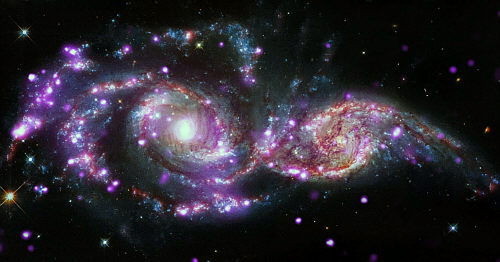
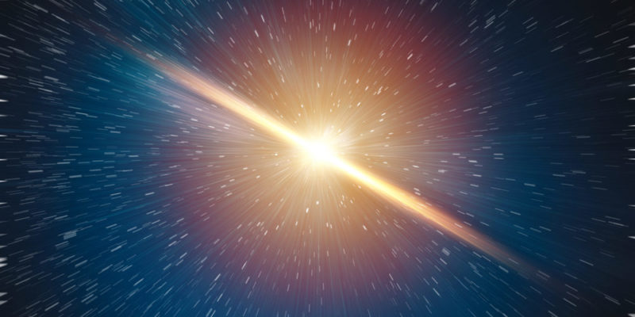

Teoría sobre el origen del Universo
El hecho de que el universo esté en expansión se deriva de las observaciones del corrimiento al rojo realizadas en la década de 1920 y que se cuantifican por la ley de Hubble. Dichas observaciones son la predicción experimental del modelo de Friedmann-Robertson-Walker, que es una solución de las ecuaciones de campo de Einstein de la relatividad general, que predicen el inicio del universo mediante un big bang.
El "corrimiento al rojo" es un fenómeno observado por los astrónomos, que muestra una relación directa entre la distancia de un objeto remoto (como una galaxia) y la velocidad con la que este se aleja. Si esta expansión ha sido continua a lo largo de la vida del universo, entonces en el pasado estos objetos distantes que siguen alejándose tuvieron que estar una vez juntos. Esta idea da pie a la teoría del Big Bang; el modelo dominante en la cosmología actual.
Durante la era más temprana del Big Bang, se cree que el universo era un caliente y denso plasma. Según avanzó la expansión, la temperatura decreció hasta el punto en que se pudieron formar los átomos. En aquella época, la energía de fondo se desacopló de la materia y fue libre de viajar a través del espacio. La energía remanente continuó enfriándose al expandirse el universo y hoy forma el fondo cósmico de microondas. Esta radiación de fondo es remarcablemente uniforme en todas direcciones, circunstancia que los cosmólogos han intentado explicar como reflejo de un periodo temprano de inflación cósmica después del Big Bang.
El examen de las pequeñas variaciones en el fondo de radiación de microondas proporciona información sobre la naturaleza del universo, incluyendo la edad y composición. La edad del universo desde el Big Bang, de acuerdo a la información actual proporcionada por el WMAP de la NASA, se estima en unos 13.700 millones de años, con un margen de error de un 1 % (137 millones de años). Otros métodos de estimación ofrecen diferentes rangos de edad, desde 11 000 millones a 20 000 millones.
La teoría actualmente más aceptada sobre la formación del universo, fue teorizada por el canónigo belga Lemaître, a partir de las ecuaciones de Albert Einstein. Lemaitre concluyó (en oposición a lo que pensaba Einstein), que el universo no era estacionario, que el universo tenía un origen. Es el modelo del Big Bang, que describe la expansión del espacio-tiempo a partir de una singularidad espaciotemporal. El universo experimentó un rápido periodo de inflación cósmica que arrasó todas las irregularidades iniciales. A partir de entonces el universo se expandió y se convirtió en estable, más frío y menos denso. Las variaciones menores en la distribución de la masa dieron como resultado la segregación fractal en porciones, que se encuentran en el universo actual como cúmulos de galaxias.
Descripción
| Descripción Física | Históricamente se ha creído que el Universo es de color negro, pues es lo que observamos al momento de mirar al cielo en las noches despejadas. En 2002, sin embargo, los astrónomos Karl Glazebrook e Ivan Baldry afirmaron en un artículo científico que el universo en realidad es de un color que decidieron llamar café con leche cósmico. Este estudio se basó en la medición del rango espectral de la luz proveniente de un gran volumen del Universo, sintetizando la información aportada por un total de más de 200.000 galaxias. |
|||
|---|---|---|---|---|
TAMAÑO |
Muy poco se conoce con certeza sobre el tamaño del universo. Puede tener una longitud de billones de años luz o incluso tener un tamaño infinito. Un artículo de 2003 dice establecer una cota inferior de 24 gigaparsecs (78 000 millones de años luz) para el tamaño del universo, pero no hay ninguna razón para creer que esta cota está de alguna manera muy ajustada. | |||
FORMA | Si el universo es espacialmente plano, se desconoce si las reglas de la geometría Euclidiana serán válidas a mayor escala. Actualmente muchos cosmólogos creen que el Universo observable está muy cerca de ser espacialmente plano, con arrugas locales donde los objetos masivos distorsionan el espacio-tiempo, de la misma forma que la superficie de un lago es casi plana. | Por otra parte, se desconoce si el universo es conexo. El universo no tiene cotas espaciales de acuerdo al modelo estándar del Big Bang, pero sin embargo debe ser espacialmente finito (compacto). |
||
ESTRUCTURA CUÁNTICA |
Según la física moderna, el Universo es un sistema cuántico aislado, un campo unificado de ondas que entra en decoherencia al tutor de la observación o medición. En tal virtud, en última instancia, el entorno del Universo sería no local y no determinista. | |||
HOMOGENEIDAD E ISOTROPÍA |
A estas escalas la densidad del universo es muy uniforme, y no hay una dirección preferida o significativamente asimétrica en el universo. Esta homogeneidad e isotropía es un requisito de la Métrica de Friedman-Lemaître-Robertson-Walker empleada en los modelos cosmológicos modernos. | |||
COMPOSICIÓN |
Conteniendo una densidad masa-energía equivalente a 9,9 × 10−30 gramos por centímetro cúbico. |
Los constituyentes primarios parecen consistir en un 73 % de energía oscura. |
Un 23 % de materia oscura fría |
Un 4 % de átomos |